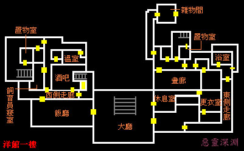
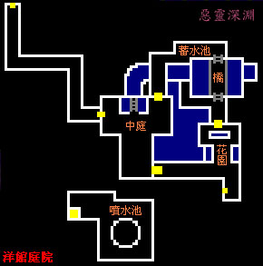
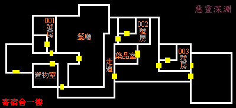
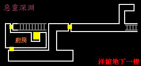

|
惡靈古堡-----地圖攻略─Chris篇(Hard)
|
|
惡靈古堡-----地圖攻略─Chris篇(Hard)
|
|
本篇攻略的進行是以取得Best
Ending為目標，想試試不同結局的玩家可自行省略變更部分攻略內容。
 進入洋館大廳後發生劇情，Chris隻身前往飯廳調查，由飯廳底部的門離開，在西側走廊上首遇僵屍 ，此時趕緊轉身離開，僵屍啃咬的Kenneth的屍體有兩副彈匣，以後再來拿。 遇過殭屍後回到大廳，發現Jill和Wesker都不見了，地上遺留有Beretta手槍，打字機旁有色帶。建議可 以先往二樓。
到二樓後如缺子彈請先到右側的陽台，在陽台上Forest的屍體有彈匣一副，連接陽台的走道有一隻閃 閃發亮的小鑰匙。接著往右側另一扇門前進，目前大多數的門都不能開，所以直接經ㄇ字走廊到書 庫，書庫桌上有植物學，之後由另一扇門出去，從樓梯往下。
樓梯下只有兩扇門，一扇鎖著，另一扇是置物間，門口有一株綠色藥草，裡面有BOX和打字機，最 重要的是拿到除草劑。 順著原路回大廳二樓，由左側門到二樓飯廳，這裡有一座石像，將殭屍解決後把石像由沒有欄杆的 地方推下去，從另一側門離開。下一個地方有往下的梯子，再次回到一樓。 梯子下方有置物室，進入後遇到Rebecca，記得拿走床上的劍之鑰匙，離開時問是否可同行時請選擇 "Yes"。
帶著除草劑前往溫室，將除草劑倒入一旁的馬達水槽中把植物殺死，玩家就可以拿取後方牆上的鎧 之鑰匙，還有兩株紅色藥草、四株綠色藥草。
拿到兩把鑰匙後可以開啟大多數的門，先回西側置物室的隔壁房間，這裡有手槍子彈、壞掉的散彈 槍，桌子的抽屜可用小鑰匙開啟，放有散彈。 綠色走廊上的飼育員的寢室，裡面有手槍子彈、散彈和飼育員的日誌。 打開通往一樓西側走廊的門，此時終於可以拿Kenneth身上的彈匣，拿完後往酒吧。 酒吧裡有一個可疑的櫃子，推開後找到樂譜，拿到鋼琴前使用，發現Chris根本看不懂樂譜，此時 Rebecca趕來支援，詢問是否可以練習，請選擇"Yes"，Rebecca的練習開始，玩家暫時離開前往飯廳。
在飯廳找到之前從二樓推下來的石像，碎片中有一顆藍寶石，把寶石拿到之前綠色走廊上，一間門 前有綠色藥草的小隔間，將藍寶石嵌入老虎石像的眼睛，得到風之幣。 回飯廳拿下壁爐上的盾牌，回酒吧找Rebecca，練習完成的Rebecca會彈給Chris聽（如果還在練習就再 去逛一逛吧），彈完後頭的門開啟，裡面一個雕像下方有黃金盾，可是拿取之後門關上了，只要用 在飯廳到手的盾牌替代即可開門。拿黃金盾到飯廳壁爐使用，可在大鐘後面得到盾之鑰匙。
大廳的右側有兩個門，通往休息室的那一個可以不進去，這裡還是說明一下。這個房間鏡子前面有 手槍子彈，轉角埋伏一隻僵屍，底部的桌子需要小鑰匙，裡面有散彈。
再往內是有一面大鏡子的更衣室，可以拿到色帶、綠色藥草兩株，剩下的門必須等到破關時拿到更 衣室鑰匙，下次遊戲才能進入。 大廳另一扇門一進去就看到女神像，推梯子到石像後面，上梯子拿取地圖。附近有一個可以推動的 櫃子，後方有一隻裝死的殭屍和色帶。
繼續往裡面走，東側走廊埋伏有兩隻殭屍犬，這裡唯一沒有裝東西的櫃子推動後在下方找到手槍子 彈。 通過走廊後首先看到一株綠色藥草，經過的第一扇門後面有兩隻殭屍犬和大量的綠色藥草﹔第二扇 門是浴室，把浴缸的水放掉找到小鑰匙﹔第三扇門有機關，內部牆上放有散彈槍，但是務必要用壞 掉的散彈槍來替換，否則會被下降的天花板壓死喔﹔最後一扇門到了另一個走廊。往右側的門走可 以到之前去過的置物室，一扇門不能開，左側的門通往畫廊，剩下一扇暫時不用理他。 畫廊有許多烏鴉，只要玩家不開槍就不會激怒他們（也不要按錯機關），這裡共有八副畫，最接近 門最大的那一個並沒有按鈕，其他七個要依照片內容年齡由小開到大，成功後在最底部的畫後面拿 到星之幣。 由置物室旁的樓梯上樓，右手邊通往之前來過的書庫的門只能從另一方向通行，想去得繞點路。 上樓梯左手邊有兩扇門，第一扇又通往兩扇門，右側是寢室，櫃子上有打火機，床旁有紅色藥草、 散彈﹔左側是工作室，按下牆上的甲蟲裝飾可將水箱的水放掉，把空的水箱推離好將大櫃子往水箱 原本的位置推，後方有散彈，牆上掛著的外套可以找到色帶，桌上有某研究員的遺書。
回到樓梯的走廊，底部的房間有一株綠色藥草，壁爐前使用打火機，拿到二樓地圖，鋼琴間的門還 不能開。 經ㄇ字走廊往展示室，這裡地上有兩個洞一個開關，將兩尊石像推動堵住動口再開開關，如果沒有 把洞堵住就打開，會被毒氣攻擊，出房門再回來就會恢復原狀。成功後拿到太陽之幣。
到ㄇ字走廊上通往閣樓的門，進去後可以看到兩株綠色藥草和Richard的屍體，屍體上有手槍子彈。再 往內，轉角埋伏一隻殭屍，先往轉彎到底的門，用打火機點燃桌上的蠟燭，桌上有色帶，櫃子有手 槍子彈，推開可疑的櫥櫃，裡面有散彈（如果沒有點燃蠟燭就拿不到散彈）。
接著往倉庫，這裡要和大蛇對決，附近有散彈，擊敗他後在他逃離的地方找到月之幣。
四個金幣都到手了，還記得一樓畫廊附近有一扇門還沒去嗎？拿著四個金幣回到那裡，打開通往長 廊的門，有一隻殭屍犬駐守，在底部使用四個金幣打開門到雜物間，將梯子推到牆邊拿取四角曲軸 棒，接著前往到洋館庭院。
 先來到花園，等待著的是三隻殭屍犬，還有三株綠色藥草、兩株藍色藥草、兩株紅色藥草，左巷內 的升降梯還不能使用，但電梯前有地圖。往下一個地方。 這裡的橋被水阻隔過不去，旁邊有一個小孔，使用四角曲軸棒打開水閘，過橋搭升降梯到中庭。
中庭沒有什麼值得流連，直接離開往地圖上的長走道。走道上有兩株綠、藍色藥草，到寄宿舍。
 一到寄宿舍先看到一尊石像，前方角落有三株藍色藥草，將石像推到置物室旁邊，地上有一個洞的 地方，如果沒這麼做會被植物的藤蔓阻止無法前進。 置物室裡有火炎彈、急救噴霧、BOX和打字機，001號房床上有紅書，桌子抽屜裡面有散彈，這裡的 浴室把浴缸的水放掉，找到控制室鑰匙。
餐廳有大蜘蛛，桌上有色帶，角落木桶上有手槍子彈，角落撞球桌透露著某種訊息，像是密碼...... 經過走廊來到藥品室前面，角落懸掛著一個蜂窩，下方的桌子上有002號房鑰匙，拿到了就快跑。 使用鑰匙打開002號房，房門旁的石像推到底可以拿到三株綠色藥草。 002號房的浴室洗手台上有手槍子彈，這裡的抽屜裡面有散彈，牆上有地圖，將房內的櫃子推推看， 找到一條往下的梯子。
地下一樓的走道上要玩推箱子遊戲，應該不難，把三個箱子都推到阻隔玩家的水中就可通過，轉彎 處有兩株綠色藥草。
這一個大空間因為水槽破裂積滿了水，裡面還有殺傷力大的鯊魚，趕緊衝到控制室用鑰匙打開進去 ，控制室裡閃著紅燈的地方有一個把手，往下拉後積水退了，附近牆上有一個紅色開關，可以打開 隔壁的門。 水退了之後，發現鯊魚都離水失去了攻擊力，可以輕鬆將他們擊敗，但是實在沒有必要。
控制室隔壁可說是個彈藥補給庫，有兩副手槍子彈、散彈，003號房鑰匙。（休息室有小鑰匙） 回到一樓003號房，浴室有一隻殭屍，打敗後會掉落手槍子彈，缺彈藥的人可以進去，書櫃看起來有 點怪異，調查後得到"V-JOLT"報告，放入紅書替代，門出現了，進去後就會碰上植物42號。
Chris還沒開打就被抓起來了，此時Rebecca趕到，玩家必須操作Rebecca解救Chris，如果沒在時間內完 成任務，Chris就必須自己努力的打倒植物，同時也會喪失獲得Best Ending的條件。 Rebecca首先到藥品室，解鎖的方法是九個燈全部亮起來，還記得之前在餐廳看到的撞球桌嗎？ 藥品室裡可以找到四個空瓶子，事實上三個就夠了，這裡有UMB No. 4（綠色）、UMB No. 2（紅色 ）、水（洗手台處），調和的方法： 紅色+water=紫色 紫色+綠色=白色 綠色+紅色=黃色 黃色+白色=藍色 藍色+紫色=V-JOLT 拿著調好的V-JOLT到地下室的休息室對植物根部使用，Rebecca的任務就完成了。
接著Chris必須打敗失去根部的植物42號，戰勝後別忘了帶走壁爐裡的兜之鑰匙。
回到走道上時碰到Wesker，被要求回洋館尋找Jill的下落，所以帶著兜之鑰匙回去吧。
才剛回到洋館畫廊前就碰上了棘手的怪物──獵人，事實上現在整個洋館都佈滿的獵人，玩家要格 外小心。 打開畫廊對面之前無法開的門，裡面一片漆黑，調查桌上打開電燈，桌上有軍用手槍子彈，書櫃上 有最後之書，調查這本書發現裡面有鷹之金幣。 出去轉彎到東側置物室，在地上有散彈、手槍子彈、急救噴霧可拿，在此整理裝備準備打大蛇。
上二樓到之前無法進入的鋼琴間，調查鋼琴後得和大蛇決鬥，勝利後從地板的洞跳下，調查像是墓 碑的東西，找到樓梯下到地下一樓。
 從樓梯下來右轉的死路有散彈和一隻殭屍，往下一通路。這條路上有兩株綠色藥草，如果要拿就必 須先解決兩隻殭屍。廚房瓦斯爐旁有小鑰匙，這裡有通往一樓的樓梯，但是請先搭電梯到洋館二樓 藏書閣旁的電梯。 二樓這裡第一要務是到電梯右側的小房間，裡面有蓄電池、兩盒散彈，藏書閣裡可拿到剪貼簿，書 桌抽屜需要小鑰匙，裡面有軍用手槍子彈。 推開書櫃，裡面的房間有色帶、手槍子彈，窗外可以看到救援直昇機在停機坪上。 藏書閣裡面一層的書房有一尊可移動的石像，先調查牆上的女神像（胸口有紅寶石的），打開開關 ， 再把石像推到開關打開的燈光照射處，旁邊會開啟一個小門，裡面有MO磁片。
二樓的西側走廊上有藍、綠色藥草各兩株，不過這裡往外的門無法通行，只好搭電梯回到地下一樓 的廚房，從廚房的樓梯離開，雖然有殭屍來襲，不過只有一隻不足懼。 從樓梯上到一樓，一樓的電梯不在這一層無法達成，此處的門通往一樓的西側走廊。 往二樓的西側走廊收藏室。收藏室桌上有指令，櫃子上有軍用手槍子彈、散彈，將梯子推到鹿頭標 本下方，到門口去把電燈關掉，調查鹿頭可得到紅寶石。將紅寶石拿到一樓綠色走廊的小隔間（之 前放藍寶石的地方），把紅寶石嵌入石老虎的另一隻眼，可取得軍用手槍。 現在已經拿到蓄電池必須回到洋館庭院的中庭，記得帶上四角曲軸棒，路上還是要小心獵人。 庭院中庭有一個無法啟動的升降梯，將蓄電池嵌入旁邊牆上的洞，搭乘升降梯來到花園的升降梯。 到橋附近用四角曲軸棒重新啟動機關把水引回來，然後回花園搭升降梯到中庭，此時中庭中央的梯 子總算露出來了，由梯子下到庭院地下。
地圖上標示的數字是玩家必須前去的順序，１往２的門旁邊有一支火焰放射器，可以拿來用，３的 地方有散彈和急救噴霧，在４遇到Enrico，可惜就在他要說什麼的時候被槍殺了，屍體上有手槍子 彈，追尋兇手的路上出現獵人阻路，用火燒死牠吧，因為火焰放射器待會必須放回去，地上有一支 六角曲軸棒。
庭院地下在事件後充滿了獵人，千萬不要戀戰，趕緊回到１，但要放回火焰放射器才可開門。
現在要前往５，在１處有打字機可是沒有色帶，中途無法前進時在旁邊牆上的小洞使用六角曲軸棒 即可通過，５的地方一定要拿門旁的火焰放射器，路上有一顆大石頭，靠近它後轉頭離開會觸發石 頭滾來，趕快躲到門前安全的地方，原先石頭擺放處後方有軍用手槍子彈。由石頭開出的路往６。
６這裡有黑蜘蛛駐守，戰勝後拾取附近的閃閃發亮的野戰刀把通往７的門上的蜘蛛網清乾淨（用火 燒亦可）。
８的地方有打字機和BOX，一株藍色藥草、急救噴霧及色帶。帶上鷹之金幣、六角曲軸棒、火焰放 射器離開。在通往９的門前放上火焰放射器才可開門，９處也有一顆大石頭，在牆上的小洞使用六 角曲軸棒兩次，再照剛剛的方式引發石頭，後頭有MO磁片、地圖，到１０。 １０的牆上也有一個小洞，使用六角曲軸棒，發現有一處的牆會凸出，用曲軸棒復原，將石像推到 該處，再次使牆凸出後復原，玩家即可推離石像，將石像推到地上開關的地方，然後在牆上打開機 關的地方拿到最後之書，調查最後之書得到狼之金幣。搭乘９的升降梯來到洋館庭院的噴水池。
噴水池旁有藍、綠色藥草各兩株，將兩枚金幣放上噴水池的兩側打開通路，可以從噴水池中央樓梯 下去，搭乘電梯到研究所地下一樓。
地下一樓的門還不能打開，只好下樓梯到地下二樓。
在置物室整理裝備，將MO磁片拿出來，置物室外面有幾隻殭屍和兩株綠色藥草，會議室前桌上有 MO磁片，下樓梯到地下三樓。
地下三樓通道上的裸體殭屍是打也打不完的，所以不用理他們。先到John的房間， 打開門旁的紅色開關（一般燈光），桌上有某研究員的信，得知必須輸入John，而密碼是Ada，附近 有綠色藥草、手槍子彈，推開櫃子，打開藍色開關（紫外線燈），調查牆上的畫，出現單字MAN、 WOMAN、APPLE、TREE，與方才拿到的某研究員的信對照，拼湊成MOLE。
先到實驗室去開鎖，實驗室地上有一捲幻燈片，不一定要拿。打開電腦輸入John、Ada，選擇樓層， B2的開鎖密碼是MOLE，將兩個樓層的鎖都打開後回地下二樓，進入會議室。
進門左側櫃子上有，會議桌上的投影機可以觀看剛剛拿到的幻燈片（會有驚為天人的發現喔，此段 幻燈片雖不是File，可是本站將其收錄在File資料中），在投影布幕旁邊牆上有一可疑的機關，調查後 打開開關，在移動的柱子後面找到動力室鑰匙，另一個角落有研究所‧警備系統資料。
地下室三樓可以先到資料存放室，牆上的凹陷處有Fax，在桌上的機器使用MO磁片得到密碼０１， 必須收集到三組密碼以後才能去牢房解救同伴獲取Best Ending。
在手術室前的置物室整理裝備，這裡有藍、綠色藥草，軍用手槍子彈、色帶、打字機和BOX，MO磁 片還是要帶在身上。 手術室這裡有紅色藥草、散彈，地上有一個紅色按鈕和兩個洞口，可以知道又要玩推箱子的遊戲， 動動腦筋把兩個箱子堵住洞口後再把梯子推到按鈕上（按壓按鈕會放出毒氣），上梯子爬過通風口 到停屍間。停屍間有軍用手槍子彈，在桌上機器使用MO磁片，獲得密碼０２。
接著到動力室，動力室切割成三間，都有吉美拉在駐守，第二間進門到底有使用MO磁片的機器，取 得密碼０３，第三間在電腦面板前打開開關，然後回第一間打開電腦面板的開關（先開亦可）。
此時電梯的動力恢復，整理裝備準備打Tyrant。在電梯前按下一旁的按鈕，Rebecca出現，兩人搭乘電 梯到地下四樓（若非Best Ending，Rebecca可能不會出現。）
出電梯後遇到Wesker，然後進入實驗室和Tyrant決鬥，實驗室的地上有手槍子彈可拿（會發亮，除非 彈盡援絕，不然實在不需要），解決後調查電腦打開電子鎖離開（若非Best Ending則須撿取Wesker身 上的萬能鑰匙）。 出實驗室發現Rebecca沒死，兩人一起搭電梯離開，地下三樓兩人分開，Chris必須到牢房把Jill救出來 （如果沒有獲得３份密碼就不用去了），然後回地下一樓打開原本打不開的門，道具欄須留一格。
在路上拿取蓄電池，道路盡頭的電梯旁使用，搭乘電梯到頂樓停機坪。 （值得一提的是頂樓停機坪是遊戲中唯一沒有地圖的地方喔。）
一到停機坪先拿電梯前箱內的信號彈，到停機坪上使用，此時直昇機還救援卻碰上了Tyrant，拿出最 強的武器拚了，只要最後記得去撿火箭砲給牠致命一擊，那就恭喜你破關了啦??（根據站長的試 驗，都不做攻擊的話火箭砲是不會出現的。還有，依據分歧的不同，也有不用打Tyrant的結局喔。）
|
這裡是惡靈古堡的專屬網站，建議您使用1024*768以上解析度、IE7.0以上瀏覽，本站為繁體中文Traditional Chinese Big5編碼
惡靈深淵Biohazard Abyss